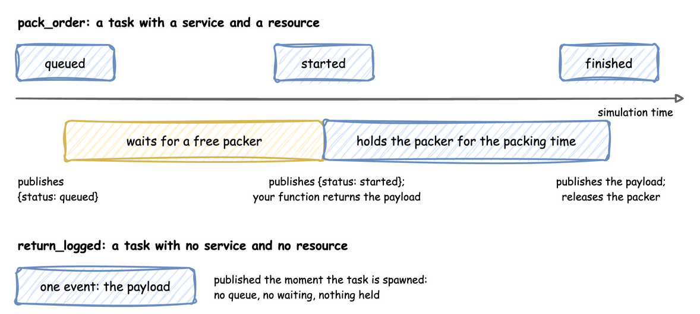

Tasks and Processes: SimulationContext
A task is what one entity does: an order being packed, a return being logged. A process is anything else that runs over time: packers going on a break every hour, a speed that drifts, a shift plan. Both are SimPy generators, functions that yield to wait. The builder and YAML write the common ones for you, and the low-level API writes them by hand.
A Task's Life
A task with a service and a resource goes through five steps and publishes three events, all with the key task-<task id>:

The payload, the finished event's value, is computed after started and before the service time, so it can use the state of the simulation at that moment. A task with neither a service nor a resource takes no time and holds nothing: it publishes its payload at once, as its only event, which suits an entity that only records that it happened, such as an order placed.
tasks:
pack_order:
service: packing # how long the work takes
resource: packers # what it holds while it works
payload: {status: finished} # the finished event's value
id_field: order_id # adds the task id to the payload
return_logged:
# No service and no resource: publishes its payload at once
payload: {status: logged}
id_field: return_id
@app.task(service_id="packing", resource_id="packers")
def pack_order(order_id: int):
# Runs when the order gets a packer, before the packing time.
# The returned dict is the finished event's value.
return {"status": "finished", "order_id": order_id}
@app.task() # no service and no resource: publishes at once
def return_logged(return_id: int):
return {"status": "logged", "return_id": return_id}
def pack_order_process(env, sampler, packers, order_id):
"""What @app.task does, by hand."""
key, path_id = f"task-{order_id}", "Shop.service.packing"
env.publish_event(key, {"path_id": path_id, "status": "queued"})
with packers.request() as request:
yield request
env.publish_event(key, {"path_id": path_id, "status": "started"})
yield env.timeout(sampler.sample(env.registry.get_config(path_id)))
env.publish_event(key, {"status": "finished", "order_id": order_id})
In YAML, payload is a fixed mapping, and id_field adds the task id to it. A payload that changes per entity is a Python function, called as function(task_id, context):
# also under tasks: a payload computed by a Python function
pack_with_delivery:
service: packing
resource: packers
# Called as choose_delivery(task_id, context) when the order is packed
payload: !python shop_logic.choose_delivery
Arrivals Start Tasks
An arrival stream starts one task per arrival. The loop draws a gap from the arrival's distribution, waits it, starts a task, and repeats; the task runs on its own while the loop waits for the next arrival:
def orders_process(env, sampler, packers):
"""What @app.arrival_loop does, by hand."""
gap = env.registry.get_config("Shop.arrival.orders")
order_id = 0
while True:
yield env.timeout(sampler.sample(gap))
env.process(pack_order_process(env, sampler, packers, order_id))
order_id += 1
In the low-level API every loop is started once, before the run:
env.process(orders_process(env, sampler, packers)) # start each loop once
env.process(packer_stats_process(env, packers))
env.process(breaks_process(env, "packers", every=50, duration=5))
Processes
A process is a generator that runs alongside the tasks. It can wait (yield env.timeout(...)), change any value in the registry, publish records, or start tasks. This one sends the packers on a 5-second break every 50 seconds:
def breaks(context: SimulationContext, resource: str, every: float, duration: float):
"""Takes every packer off for a break of `duration` seconds every `every` seconds."""
path = f"{context.sim_id}.resources.{resource}.current_cap"
registry = context.env.registry
while True:
yield context.env.timeout(every)
normal = registry.get(path).value
registry.update(path, 0)
yield context.env.timeout(duration)
registry.update(path, normal)
app.add_process(breaks, resource="packers", every=50, duration=5)
def breaks_process(env, resource: str, every: float, duration: float):
"""What add_process starts, by hand: a plain SimPy generator."""
path = f"Shop.resources.{resource}.current_cap"
while True:
yield env.timeout(every)
normal = env.registry.get(path).value
env.registry.update(path, 0)
yield env.timeout(duration)
env.registry.update(path, normal)
In the low-level API it is started with env.process, before the run, as low-level-start above shows. Setting current_cap to 0 stops new work but not the work in progress: Resources explains what happens to busy units when a capacity drops.
Telemetry
Telemetry reports a value at a fixed interval of simulation time. YAML publishes resource statistics by name; the builder and the low-level API publish anything you compute:
@app.telemetry_loop(interval=10.0)
def packer_stats(context: SimulationContext):
packers = context.get_resource("packers")
context.publish("packers_busy", packers.in_use) # as Shop.packers_busy
context.publish("packers_waiting", len(packers.queue.items)) # requests waiting
def packer_stats_process(env, packers):
"""What @app.telemetry_loop does, by hand."""
while True:
env.publish_telemetry("Shop.packers_busy", packers.in_use)
env.publish_telemetry("Shop.packers_waiting", len(packers.queue.items))
yield env.timeout(10.0)
SimPy and desflow
In SimPy a task is a process you write: request the resource with with resource.request() as request: yield request, wait with yield env.timeout(...), and leave the with block to release it. The Low-level tabs above are exactly that SimPy code, with one addition: env.publish_event at each step, so the run produces records.
The builder's @app.task and a YAML task generate the same SimPy process from a description: which service, which resource, and what payload. @app.arrival_loop and a YAML spawn generate the loop that starts them. A process started with add_process or listed under processes is a plain SimPy generator, given the context so it can reach the registry and the clock.
Limits and Common Mistakes
- A task holds one resource. An order that needs a picker and a packing bench at once, or a handover between them, is a process: Multi-Resource Handoffs shows how.
- A task cannot be interrupted. Breakdowns that stop work in progress, such as a label printer that jams, need a process that catches SimPy's
Interrupt: Preemptive Breakdowns. - A finished event is exactly the payload. It has no
statusorpath_idunless the payload includes them. - Runtime helpers need a running simulation.
context.spawn,context.get_resourceandcontext.envraiseRuntimeErrorbeforerun(); call them inside a loop, task or process.